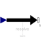

BasicWorldForceExternal force acting at frame_b, defined by 3 input signals |

|
Information
This information is part of the Modelica Standard Library maintained by the Modelica Association.
The 3 signals of the force connector are interpreted as the x-, y- and z-coordinates of a force acting at the frame connector to which this component is attached. Via parameter resolveInFrame it is defined, in which frame these coordinates shall be resolved:
| Types.ResolveInFrameB. | Meaning |
|---|---|
| world | Resolve input force in world frame (= default) |
| frame_b | Resolve input force in frame_b |
| frame_resolve | Resolve input force in frame_resolve (frame_resolve must be connected) |
If resolveInFrame = Types.ResolveInFrameB.frame_resolve, the force coordinates are with respect to the frame, that is connected to frame_resolve.
If resolveInFrame is not Types.ResolveInFrameB.frame_resolve, then the position vector and the orientation object of frame_resolve must be set to constant values from the outside in order that the model remains balanced (these constant values are ignored).
Parameters (1)
| resolveInFrame |
Value: Modelica.Mechanics.MultiBody.Types.ResolveInFrameB.world Type: ResolveInFrameB Description: Frame in which force is resolved (1: world, 2: frame_b, 3: frame_resolve) |
|---|
Connectors (3)
| frame_b |
Type: Frame_b Description: Coordinate system fixed to the component with one cut-force and cut-torque |
|
|---|---|---|
| frame_resolve |
Type: Frame_resolve Description: The input signals are optionally resolved in this frame |
|
| force |
Type: RealInput[3] Description: x-, y-, z-coordinates of force resolved in frame defined by resolveInFrame |
Components (1)
| world |
Type: World |
|---|
Used in Components (2)
|
Modelica.Mechanics.MultiBody.Forces External force acting at frame_b, defined by 3 input signals and resolved in frame world, frame_b or frame_resolve |
|
|
Modelica.Mechanics.MultiBody.Forces External force and torque acting at frame_b, defined by 3+3 input signals and resolved in frame world, frame_b or in frame_resolve |